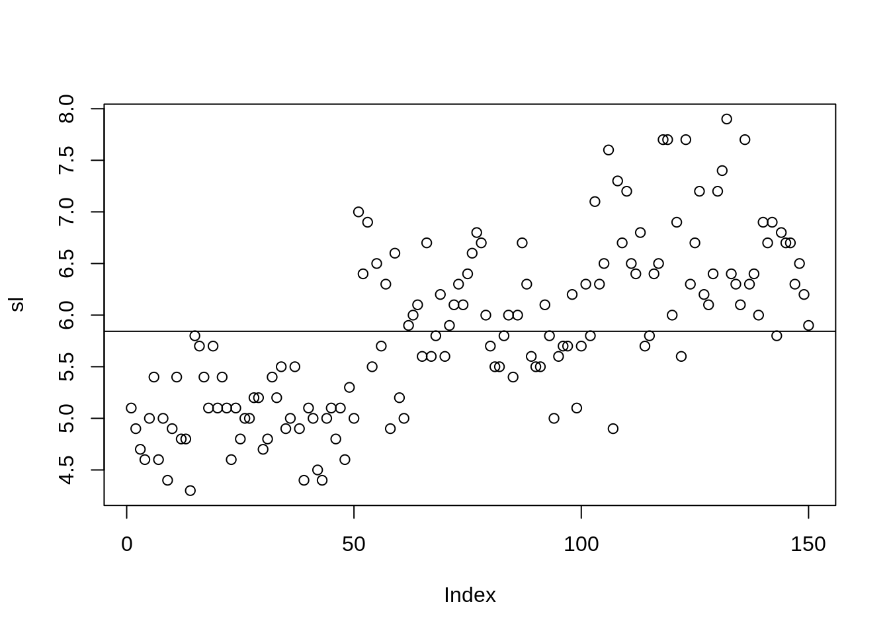
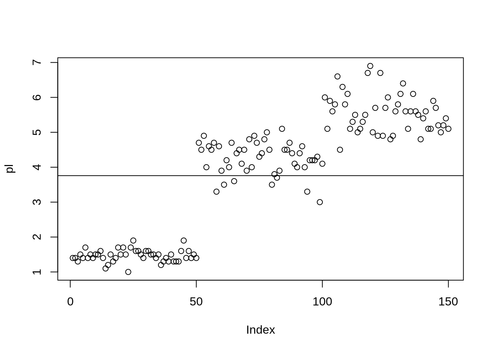

Queremos saber o quanto distante ou próximo os valores são em relação a média
head(iris)## Sepal.Length Sepal.Width Petal.Length Petal.Width Species
## 1 5.1 3.5 1.4 0.2 setosa
## 2 4.9 3.0 1.4 0.2 setosa
## 3 4.7 3.2 1.3 0.2 setosa
## 4 4.6 3.1 1.5 0.2 setosa
## 5 5.0 3.6 1.4 0.2 setosa
## 6 5.4 3.9 1.7 0.4 setosadim(iris)## [1] 150 5sl <- iris$Sepal.Length
length(sl)## [1] 150É a mais simples medida - Maior menos o Menor valor. o método range retorna o valor máximo e o valor mínimo.
sl.h <- diff(range(sl))
sl.h## [1] 3.6sl.var <- var(sl)
sl.var## [1] 0.6856935Para calcular a variância populacional podemos multiplicar por (lenght(n) - 1)/lenght(n)
sl.sd <- sd(sl)
sl.sd## [1] 0.8280661sl.cv <- sd(sl)/mean(sl)*100
sl.cv## [1] 14.17113Se o coeficiente for menor que 25% dizemos que ele é homogênio, se for maior dizemos que ele é heterogênio
pl <- iris$Petal.Length
head(pl)## [1] 1.4 1.4 1.3 1.5 1.4 1.7É a mais simples medida - Maior menos o Menor valor. o método range retorna o valor máximo e o valor mínimo.
pl.h <- diff(range(pl))
pl.h## [1] 5.9pl.var <- var(pl)
pl.var## [1] 3.116278Para calcular a variância populacional podemos multiplicar por (lenght(n) - 1)/lenght(n)
pl.sd <- sd(pl)
pl.sd## [1] 1.765298pl.cv <- sd(pl)/mean(pl)*100
pl.cv## [1] 46.97441Se o coeficiente for menor que 25% dizemos que ele é homogênio, se for maior dizemos que ele é heterogênio
Média
c(mean(sl), mean(pl))## [1] 5.843333 3.758000Amplitude
c(sl.h, pl.h)## [1] 3.6 5.9Variância
c(sl.var, pl.var)## [1] 0.6856935 3.1162779Desvio padrão
c(sl.sd, pl.sd)## [1] 0.8280661 1.7652982Coeficiente de variação
c(sl.cv, pl.cv)## [1] 14.17113 46.97441plot(sl)
abline(h = mean(sl)) a linha representa a média
plot(pl)
abline(h = mean(pl))